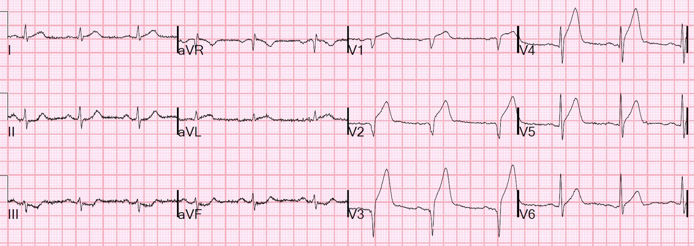
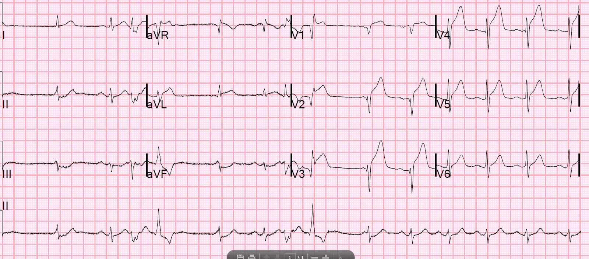
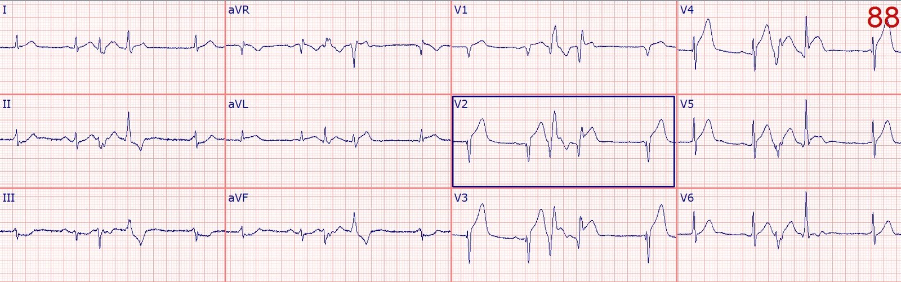
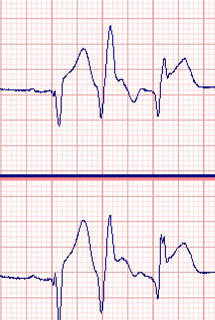
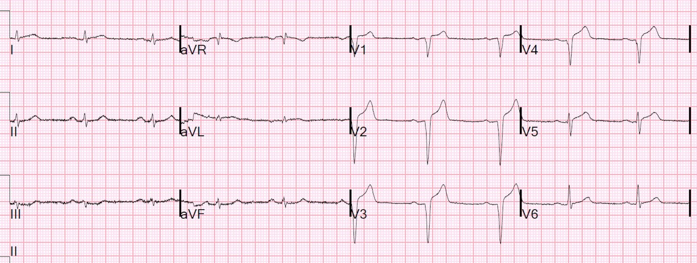
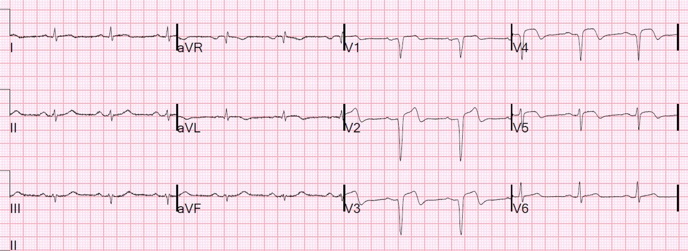
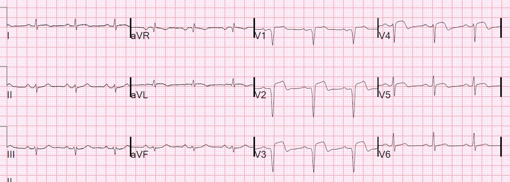
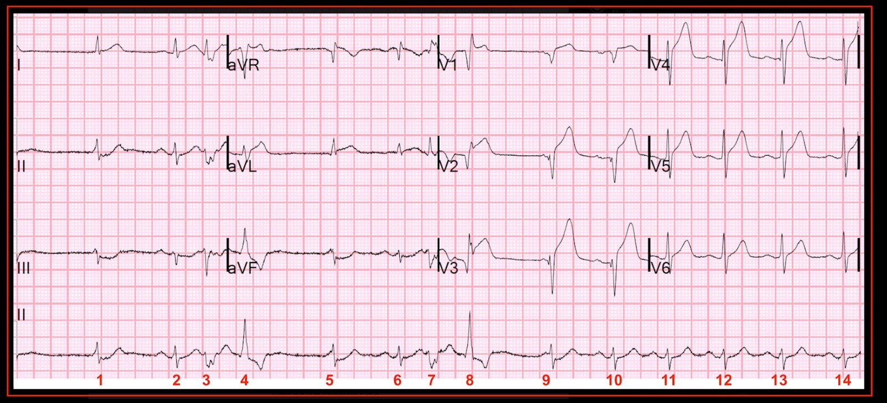
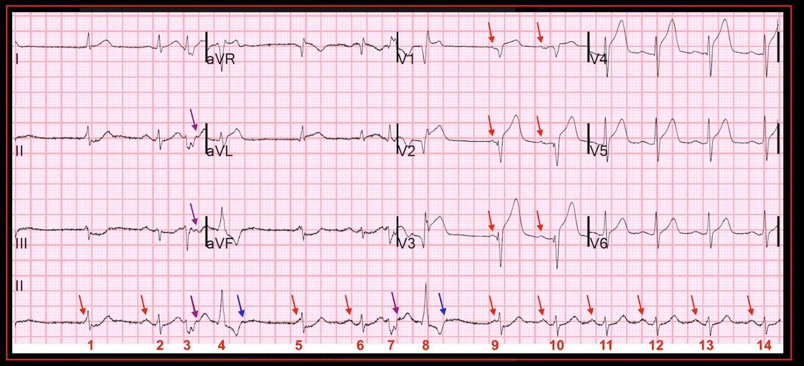

19/10/2018 — STEMI thành trước và PVC đa dạng có khoảng ghép ngắn. Khi nào dùng thuốc chẹn beta trong nhồi máu cơ tim cấp?
Bản dịch tiếng Việt của bài "Anterior STEMI and multiform PVCs with Narrow Coupling Interval. When to give beta blockers in acute MI?" – Dr. Smith’s ECG Blog. Giữ nguyên toàn bộ 11 hình ảnh của bản gốc.
Một bệnh nhân nam trung niên bị khó chịu ở ngực trong 45 phút và tự lái xe đến khoa cấp cứu (ED). Ông có tiền sử tăng lipid máu. Chưa từng bị nhồi máu cơ tim.
Huyết áp ban đầu của ông là 152/102, mạch 76.
Đây là điện tâm đồ lúc phân loại (triage) của ông:


Phòng thông tim (cath lab) được kích hoạt, bệnh nhân được dùng aspirin, ticagrelor và một liều heparin tiêm nhanh (bolus), và một điện tâm đồ khác được ghi trong lúc chờ kíp thông tim đến vì đang ngoài giờ hành chính:


Có 4 PVC trong 10 giây được ghi ở chuyển đạo II. Nhưng không phải tất cả chúng đều được ghi lại ở mọi chuyển đạo trên bản pdf điện tâm đồ 12 chuyển đạo đã in.
Tuy nhiên, trên hệ thống McKesson, người ta có thể cuộn xem trọn 10 giây của từng chuyển đạo. Tôi đã làm như vậy dưới đây để cho thấy các PVC ở tất cả các chuyển đạo, kể cả các chuyển đạo V1-V3:


PVC đầu tiên xuất hiện 320 ms sau khi khởi đầu QRS bình thường, và nó gần như rơi thẳng lên sóng T.
Vì vậy, đây gần như là hiện tượng R trên T (R-on-T).
Đây là hình phóng to vùng đó:


Kali là 3,4 mEq/L. Lactat 4,8 (gợi ý có phần nào tình trạng sốc, nhưng không tương hợp với phần còn lại của bệnh cảnh lâm sàng). Bệnh nhân đã được bù kali.
Bác sĩ can thiệp lo ngại về các PVC đa dạng có khoảng ghép ngắn
Miếng dán khử rung đã được đặt sẵn, và bác sĩ can thiệp yêu cầu tiêm tĩnh mạch metoprolol 5 mg trước khi thông tim. Thuốc đã được tiêm, và các PVC biến mất.
Troponin I lần đầu dưới 0,010 ng/mL (dưới giới hạn phát hiện). (Hãy nhớ điều này vào lần tới khi có ai đó bảo bạn rằng không thể là nhồi máu cơ tim vì troponin âm tính; 50% số ca STEMI có troponin ban đầu dưới giới hạn trên tham chiếu (URL) 99%, và nhiều ca dưới cả giới hạn phát hiện.)
Phát hiện LAD bị tắc ở vị trí gần hơn (proximal) so với một nhánh chéo thứ 2 lớn; tổn thương đã được tái thông và đặt stent.
Troponin đỉnh là 75 ng/mL.
Sau thông tim, ông được dùng metoprolol đường uống.
Siêu âm tim cản âm thực hiện sau thông tim:
Chức năng tâm thu thất trái giảm mức độ vừa. Phân suất tống máu ước tính là 36%.
Rối loạn vận động thành khu trú - phần xa vách liên thất, thành trước và mỏm.
Điện tâm đồ lúc 24 giờ:


Vào khoảng giờ thứ 47, ông có một cơn nhịp nhanh thất. (Với bất kỳ VT nào xảy ra sau 48 giờ ở bệnh nhân không có thiếu máu cục bộ dai dẳng hoặc tái phát, cần cân nhắc đặt ICD. Bệnh nhân này chỉ vừa sát ngưỡng đó)
Tuy nhiên, hiện tượng không tái lưu, kèm thiếu máu cục bộ dai dẳng, có thể giải thích cơn VT muộn ở mức ranh giới này.
48 giờ


72 giờ


PVC và nguy cơ VT
Có thể các PVC đa dạng, đặc biệt là PVC có khoảng ghép ngắn, khiến bệnh nhân có nguy cơ cao bị VT/VF, nhưng theo những gì tôi biết, điều này chưa được chứng minh chắc chắn trong y văn (xem một vài tài liệu tham khảo bên dưới). PVC với bất kỳ khoảng ghép nào cũng đều làm tăng nguy cơ VT/VF, vì mọi VT/VF đều được khởi phát bởi một PVC. Nhưng theo những gì tôi biết, chưa có chứng minh rằng việc ức chế chúng làm tăng hay giảm nguy cơ.
Trong thử nghiệm CAST (thử nghiệm ức chế loạn nhịp tim – cardiac arrhythmia suppression trial) trên những bệnh nhân có nhồi máu cơ tim trước đây, nhưng không phải cấp, kèm phân suất tống máu thấp và có PVC, những bệnh nhân có PVC bị ức chế trong giai đoạn dùng thử thuốc chống loạn nhịp nhóm 1 (encainide, flecainide hoặc moricizine) được phân ngẫu nhiên vào nhóm dùng thuốc nhóm 1 hoặc giả dược. Kết quả: những người dùng thuốc chống loạn nhịp có nguy cơ đột tử do rối loạn nhịp cao hơn .
Vì vậy, thuốc chống loạn nhịp nhóm I nguy hiểm đối với quần thể bệnh nhân này (một lần nữa, không phải quần thể nhồi máu cơ tim cấp).
PVC và khoảng ghép
https://www.ncbi.nlm.nih.gov/pubmed/18468196 (nghiên cứu về khoảng ghép của PVC và nguy cơ nhịp nhanh thất đơn dạng)
Nghiên cứu này gợi ý rằng khoảng ghép ngắn thực sự làm tăng nguy cơ nhịp nhanh thất đơn dạng. Thường có thể quan sát thấy VT được khởi phát bởi PVC.
Nghiên cứu này, nhỏ hơn nhiều, từ năm 1974, lại mâu thuẫn với điều đó:
https://www.ahajournals.org/doi/pdf/10.1161/01.CIR.50.3.529 (bài báo trên tạp chí Circulation)
Vậy chúng ta có thể làm gì để giảm nguy cơ VT/VF ở bệnh nhân này?
Thuốc chẹn beta
—thuốc chống loạn nhịp nhóm II theo phân loại Vaughan Williams)
–Tôi sẽ không bàn ở đây về các thuốc chống loạn nhịp nhóm I (ví dụ lidocaine, Ib) hay nhóm III (ví dụ amiodarone).
Thuốc chẹn beta làm giảm tỷ lệ rung thất, và nhìn chung có lợi cho một phân nhóm STEMI thành trước ổn định sẽ được can thiệp PCI (xem chi tiết bên dưới), nhưng với một phân nhóm kém ổn định hơn, chúng làm tăng nguy cơ sốc tim. Cho đến năm 2005, dùng chẹn beta sớm (ngay tại khoa cấp cứu) là bắt buộc đối với bệnh nhân nhồi máu cơ tim cấp. Nhưng toàn bộ dữ liệu ủng hộ việc này đều đến từ kỷ nguyên trước tái tưới máu. Sau đó, thử nghiệm COMMIT trên bệnh nhân STEMI được điều trị tiêu sợi huyết (2005, mô tả chi tiết bên dưới) cho thấy chẹn beta làm giảm tỷ lệ rung thất, nhưng làm tăng tỷ lệ sốc tim, và nhìn chung không có khác biệt về tử vong. Điều thú vị là mức giảm rung thất nhờ dùng chẹn beta sớm là giảm rung thất sau ngày 1. Các thử nghiệm về sau trên những phân nhóm có nguy cơ sốc tim thấp hơn và được can thiệp PCI cho thấy lợi ích khiêm tốn, có lẽ là thật, của chẹn beta sớm mà không có các tác dụng bất lợi.
ĐIỀU CỐT LÕI: Nếu không có chống chỉ định (không suy tim, huyết áp tâm thu ít nhất 120, không nhịp nhanh, không blốc AV), metoprolol 5mg tĩnh mạch x 3, kèm metoprolol đường uống dùng sau đó nếu dung nạp được, dường như mang lại lợi ích khi dùng trước PCI trong nhồi máu cơ tim thành trước.
Bệnh nhân nhồi máu cơ tim thành trước được điều trị bằng PCI (không phải tiêu sợi huyết), không có chống chỉ định với thuốc chẹn beta, dự kiến được can thiệp PCI trong vòng 6 giờ kể từ khởi phát, có huyết áp tâm thu trên 120, dường như được hưởng lợi từ 3 liều metoprolol tĩnh mạch 5 mg dùng trước PCI. Mọi bệnh nhân không có chống chỉ định đều được hưởng lợi từ metoprolol đường uống sau PCI.
Bệnh nhân của chúng ta ở trên phù hợp với trường hợp này.
Chiến lược tốt nhất có thể là dùng esmolol tiêm nhanh rồi truyền liên tục; đây là một thuốc chẹn beta tác dụng rất ngắn, có thể ngừng ngay khi xuất hiện dấu hiệu sốc tim đầu tiên.
Cuối cùng, có rất ít bằng chứng cho thấy thuốc chẹn beta quan trọng hơn ở bệnh nhân có rối loạn nhịp thất, kể cả PVC thường xuyên và khoảng ghép ngắn, nhưng ít nhất ý tưởng này cũng có phần hợp lý bề ngoài (face validity), và các thử nghiệm ngẫu nhiên dường như cho thấy lợi ích mà không gây hại ở phân nhóm không có nguy cơ cao bị sốc tim này.
5 tài liệu tham khảo then chốt
1. Khuyến cáo trong Hướng dẫn STEMI 2017 của Hội Tim mạch châu Âu (ESC).
https://academic.oup.com/eurheartj/article/39/2/119/4095042 (hướng dẫn của ESC về xử trí STEMI, đăng trên European Heart Journal)
7.3.1 Dùng thuốc chẹn beta đường tĩnh mạch sớm
Dựa trên bằng chứng hiện có, nên cân nhắc dùng sớm thuốc chẹn beta đường tĩnh mạch ngay lúc bệnh nhân đến viện, tiếp theo là chẹn beta đường uống, ở những bệnh nhân ổn định huyết động được can thiệp PCI tiên phát.
Ở bệnh nhân được điều trị tiêu sợi huyết, dùng sớm chẹn beta đường tĩnh mạch làm giảm tỷ lệ rối loạn nhịp thất ác tính cấp, mặc dù chưa có bằng chứng rõ ràng về lợi ích lâm sàng lâu dài.344–346
Ở bệnh nhân được can thiệp PCI tiên phát, thử nghiệm Effect of Early Metoprolol in Cardioprotection During an Acute Myocardial Infarction (Tác dụng bảo vệ tim của metoprolol sớm trong nhồi máu cơ tim cấp) của Ibanez và cs. (METOCARD-CNIC) (n = 270) (và nghiên cứu theo dõi dài hạn này của Pizarro và cs., xem mô tả bên dưới) cho thấy việc dùng metoprolol tĩnh mạch rất sớm (15 mg) ngay lúc chẩn đoán ở bệnh nhân STEMI thành trước, không có dấu hiệu suy tim và huyết áp tâm thu ít nhất 120 mmHg có liên quan đến giảm kích thước ổ nhồi máu đo bằng cộng hưởng từ tim (CMR) ở ngày 5–7 (25,6 g so với 32,0 g; P = 0,012), và LVEF cao hơn trên CMR lúc 6 tháng (48,7% so với 45,0%; P = 0,018) so với điều trị chứng.347,348 Mọi bệnh nhân không có chống chỉ định đều được dùng metoprolol đường uống trong vòng 24 giờ. Tỷ lệ biến cố tim mạch chính (MACE) (tiêu chí gộp gồm tử vong, nhập viện do suy tim, tái nhồi máu hoặc rối loạn nhịp thất ác tính) lúc 2 năm là 10,8% so với 18,3% ở nhánh metoprolol tĩnh mạch và nhánh chứng (P = 0,065).348 Điều trị bằng metoprolol có liên quan đến giảm đáng kể tỷ lệ và mức độ tắc nghẽn vi mạch (MVO).349 Thử nghiệm Early Intravenous Beta-Blockers in Patients With ST-Segment Elevation Myocardial Infarction Before Primary Percutaneous Coronary Intervention (Chẹn beta tĩnh mạch sớm ở bệnh nhân nhồi máu cơ tim ST chênh lên trước PCI tiên phát) (EARLY-BAMI) của Roolvink và cs. đã phân ngẫu nhiên 683 bệnh nhân STEMI trong vòng 12 giờ kể từ khởi phát vào nhóm metoprolol tĩnh mạch (5 mg lúc tuyển chọn và thêm 5 mg ngay trước PCI) hoặc giả dược.350 Mọi bệnh nhân không có chống chỉ định đều được dùng metoprolol đường uống trong vòng 12 giờ. Dùng sớm metoprolol tĩnh mạch không cho thấy lợi ích nào trong việc giảm kích thước ổ nhồi máu trên CMR (tiêu chí chính của thử nghiệm, chỉ có dữ liệu ở 342 bệnh nhân (55%)), hay mức giải phóng dấu ấn sinh học tim. Dùng sớm metoprolol tĩnh mạch có liên quan đến mức giảm ở ngưỡng ranh giới về rối loạn nhịp thất ác tính (3,6% so với 6,9%; P = 0,050). Bệnh nhân được dùng metoprolol tĩnh mạch không tăng nguy cơ mất ổn định huyết động, blốc nhĩ thất (AV) hay MACE lúc 30 ngày. Các phân tích post hoc từ những thử nghiệm PCI tiên phát kiểm định các giả thuyết khác đã gợi ý rằng dùng sớm chẹn beta tĩnh mạch có thể đi kèm lợi ích lâm sàng, nhưng không thể loại trừ sai lệch chọn mẫu ngay cả sau khi đã hiệu chỉnh sự mất cân bằng về các đặc điểm ban đầu.351,352 Dựa trên bằng chứng hiện có, nên cân nhắc dùng sớm thuốc chẹn beta đường tĩnh mạch ngay lúc bệnh nhân đến viện, tiếp theo là chẹn beta đường uống, ở những bệnh nhân ổn định huyết động được can thiệp PCI tiên phát.
7.3.2 Điều trị chẹn beta trung hạn và dài hạn
Dựa trên bằng chứng hiện tại, nên cân nhắc dùng thường quy thuốc chẹn beta cho mọi bệnh nhân sau STEMI như đã bàn chi tiết trong hướng dẫn về suy tim;6 thuốc chẹn beta được khuyến cáo ở bệnh nhân giảm chức năng tâm thu thất trái (LVEF nhỏ hơn hoặc bằng 40%), khi không có chống chỉ định như suy tim cấp, mất ổn định huyết động hoặc blốc AV mức độ cao. Nên dùng các thuốc và liều đã được chứng minh hiệu quả.357–361 Vì cho đến nay chưa có nghiên cứu nào giải quyết thỏa đáng vấn đề thời gian dùng chẹn beta, nên chưa thể đưa ra khuyến cáo nào về mặt này. Về thời điểm bắt đầu chẹn beta đường uống ở bệnh nhân không được dùng chẹn beta tĩnh mạch sớm, một phân tích sổ bộ hồi cứu trên 5259 bệnh nhân gợi ý rằng dùng chẹn beta sớm (tức là dưới 24 giờ) mang lại lợi ích sống còn so với dùng muộn.362
Do đó, ở bệnh nhân ổn định huyết động, nên cân nhắc bắt đầu chẹn beta đường uống trong vòng 24 giờ đầu.
Rối loạn nhịp thất
Cũng trích từ hướng dẫn của ESC, phần rối loạn nhịp thất (không có bình luận nào về khoảng ghép ngắn)
Ngoại tâm thu thất rất thường gặp trong ngày đầu của giai đoạn cấp, và các rối loạn nhịp phức tạp (phức bộ đa dạng, các loạt ngắn, hoặc hiện tượng R trên T) cũng thường gặp. Giá trị của chúng trong vai trò yếu tố tiên đoán VF còn đáng ngờ và không cần điều trị đặc hiệu. VT bền bỉ hoặc VF xảy ra ngoài giai đoạn sớm (thường là 48 giờ sau khởi phát STEMI) mà không do thiếu máu cục bộ tái phát khởi kích có ý nghĩa tiên lượng xấu, và khuyến cáo đánh giá cấy ICD để dự phòng thứ phát đột tử do tim theo các hướng dẫn hiện hành.3 Dự phòng tiên phát đột tử do tim bằng ICD trong vòng 40 ngày sau nhồi máu cơ tim khi không có VT/VF nhìn chung không được chỉ định.3
Nhịp nhanh thất sau 48 giờ:
Trong nghiên cứu lớn này, việc xuất hiện rối loạn nhịp thất sau 48 giờ báo hiệu tiên lượng xấu hơn. https://jamanetwork.com/journals/jama/fullarticle/183843
Do đó, hướng dẫn của ESC nêu:
“VT bền bỉ hoặc VF xảy ra ngoài giai đoạn sớm (thường là 48 giờ sau khởi phát STEMI) mà không do thiếu máu cục bộ tái phát khởi kích có ý nghĩa tiên lượng xấu, và khuyến cáo đánh giá cấy ICD để dự phòng thứ phát đột tử do tim theo các hướng dẫn hiện hành. Tài liệu tham khảo của họ là Hướng dẫn ACC/AHA 2006 về Xử trí Bệnh nhân Rối loạn Nhịp thất và Dự phòng Đột tử do Tim.
2. Thử nghiệm COMMIT
Thử nghiệm COMMIT đã phân ngẫu nhiên 45.000 bệnh nhân STEMI không có nguy cơ cao bị biến cố bất lợi do chẹn beta (huyết áp tâm thu dưới 100 mm Hg), tần số tim dưới 50 nhịp/phút, blốc tim, hoặc sốc tim) vào nhóm dùng 15 mg metoprolol tĩnh mạch chia 3 liều cách nhau mỗi 5 phút, tiếp theo là 50 mg đường uống, rồi 200 mg dạng giải phóng kéo dài bắt đầu từ ngày 2. Tử vong lúc 4 tuần là như nhau ở cả hai nhóm. Nhóm metoprolol có ít tử vong do rối loạn nhịp hơn (tuy nhiên toàn bộ khác biệt đó đều xảy ra sau ngày 1) nhưng có nhiều sốc tim hơn, đặc biệt ở các nhóm nguy cơ cao (23,1 trên 1000 ở những người từ 70 tuổi trở lên lúc tham gia; 23,3 trên 1000 ở nhóm có huyết áp tâm thu dưới 120 mm Hg; 34,6 trên 1000 ở những người đến viện với tần số tim trên 110 nhịp/phút; và 56,9 (14,4) trên 1000 ở những người thuộc Killip độ III).
Điều này gợi ý rằng ở bất kỳ bệnh nhân nào có nguy cơ sốc tim tăng đáng kể, nên tránh dùng thuốc chẹn beta. Cần hết sức thận trọng với bất kỳ ai bị nhồi máu cơ tim thành trước, đặc biệt khi có nhịp nhanh (cho thấy thể tích nhát bóp giảm) hoặc chức năng thất trái kém trên siêu âm tim tại giường. Thà bị rung thất (có thể khử rung được) còn hơn bị sốc tim.
Những đoạn quan trọng trích từ thử nghiệm COMMIT (nguyên văn):
Tuy nhiên, khi xem xét riêng từng nguyên nhân tử vong
được quy cho (bảng 3), việc phân nhóm dùng metoprolol
có liên quan đến mức giảm tương đối 22% (11–32), có ý nghĩa rất cao,
về tử vong được quy cho rối loạn nhịp
(388 [1,7%] metoprolol so với 498 [2,2%] giả dược; p=0,0002)
và ngược lại, có liên quan đến mức tăng tương đối 29% (13–47), có ý nghĩa rất cao,
về tử vong được quy cho sốc
tim (496 [2,2%] so với 384 [1,7%]; p=0,0002). Tính trung bình
trên toàn bộ quần thể nghiên cứu, mức giảm tuyệt đối về
tử vong liên quan đến rối loạn nhịp và mức tăng tuyệt đối về
tử vong liên quan đến sốc có độ lớn tương tự nhau. Không
ghi nhận khác biệt rõ ràng nào giữa hai nhóm điều trị
về các nguyên nhân tử vong được quy cho khác, dù xét
riêng lẻ hay gộp chung (890 [3,9%] so với 915 [4,0%];
p=0,55).
Mũi tiêm tĩnh mạch đầu tiên gồm 5 mg
metoprolol hoặc giả dược tương ứng được tiêm
ngay lập tức trong khoảng 2–3 phút. Khoảng 2–3 phút sau, nếu
tần số tim trên 50 nhịp/phút và huyết áp tâm
thu trên 90 mm Hg, thì tiêm ống thuốc thứ hai;
và tương tự với ống thứ ba (nếu không
thì có thể bỏ một phần hoặc toàn bộ liều tĩnh mạch thứ hai và thứ ba).
15 phút sau các liều tĩnh mạch này,
cho uống một viên metoprolol 50 mg hoặc viên giả dược, và
lặp lại mỗi 6 giờ trong các ngày 0–1. Từ ngày 2 trở đi,
cho uống một viên metoprolol giải phóng có kiểm soát 200 mg hoặc viên giả dược
mỗi ngày một lần trong tối đa 4 tuần (hoặc, nếu sớm hơn,
cho đến khi ra viện hoặc tử vong), trừ khi được cho là đã xuất hiện
một chống chỉ định rõ ràng nào đó.
Mức giảm nguy cơ tái nhồi máu
và rung thất với metoprolol dường như
xuất hiện từ từ hơn, không có khác biệt có ý nghĩa
giữa các nhóm điều trị trong ngày 0–1
(tái nhồi máu: 0·9% metoprolol so với 1·0% giả dược;
rung thất: 1·3% so với 1·5%), nhưng có
lợi ích có ý nghĩa từ ngày 2 trở đi (tái nhồi máu:
1·1% so với 1·5%; rung thất: 1·3% so với 1·6%;
mỗi p0·01).
Xác suất
xuất hiện sốc cao hơn nhiều ở một số loại
bệnh nhân nhóm chứng so với những loại khác, nguy cơ sốc vượt trội tuyệt đối
khi được phân vào nhóm metoprolol
đặc biệt lớn ở một số phân nhóm ban đầu: ví
dụ, 23·1 (SE 4·7) trên 1000 ở những người từ 70 tuổi
trở lên lúc vào nghiên cứu; 23·3 (4·0) trên 1000 ở những người
có huyết áp tâm thu dưới 120 mm
Hg; 34·6 (11·5) trên 1000 ở những người có
tần số tim trên 110 lần/phút; và 56·9 (14·4) trên
1000 ở những người Killip độ III (bảng 6).
Đối với tiêu chí gộp hiệu quả và an toàn,
việc phân vào nhóm metoprolol có liên quan đến
tăng rõ rệt nguy cơ ở bệnh nhân nguy cơ cao và
xu hướng giảm nguy cơ ở bệnh nhân nguy cơ thấp. Cụ
thể, có mức tăng tuyệt đối 43·7
(SE 13·0) biến cố như vậy trên 1000 bệnh nhân ở nhóm
nguy cơ sốc cao, so với mức tăng tuyệt đối
chỉ 2·3 (6·2) trên 1000 ở nhóm nguy cơ trung bình
và mức giảm 5·1 (2·8) trên 1000 ở nhóm nguy cơ sốc
thấp (p xu hướng 0·0001).
3. Ibanez và cs. Metoprolol sớm ở bệnh nhân STEMI được PCI.
Ibanez B, và cs. Effect of early metoprolol on infarct size in ST-segment-elevation myocardial infarction patients undergoing primary percutaneous coronary intervention: the Effect of Metoprolol in Cardioprotection During an Acute Myocardial Infarction (METOCARD-CNIC) trial. Circulation
2013;128(14):1495–1503.
Nghiên cứu này cho thấy lợi ích của metoprolol tĩnh mạch sớm, 15 mg, ở những bệnh nhân dưới đây. Một báo cáo thứ hai cho thấy lợi ích được duy trì ở thời điểm 12 tháng.
Tiêu chuẩn chọn vào gồm: bệnh nhân từ 18 đến 80 tuổi, Killip nhỏ hơn hoặc bằng độ II, STEMI thành trước được PCI, và thời gian dự kiến từ khởi phát triệu chứng đến tái tưới máu ≤6 giờ.
Tiêu chuẩn loại trừ gồm: huyết áp tâm thu liên tục dưới 120, khoảng PR lớn hơn 240 ms, hoặc bất kỳ blốc AV độ 2 hoặc độ 3 nào, hoặc tần số tim liên tục dưới 60, hoặc đang điều trị thuốc chẹn beta (BB).
Điều trị: Bệnh nhân được phân ngẫu nhiên vào nhóm metoprolol tĩnh mạch được tiêm tối đa ba liều bolus metoprolol tartrate 5 mg, cách nhau 2 phút (không dùng giả dược). Tất cả bệnh nhân, trừ những người xuất hiện chống chỉ định, đều được dùng metoprolol tartrate đường uống trong thời gian nằm viện. Liều uống đầu tiên được lên lịch vào 12 đến 24 giờ sau nhồi máu, phù hợp với các hướng dẫn lâm sàng.
Rối loạn nhịp thất ác tính xảy ra ở 5 trong 140 bệnh nhân được dùng metoprolol và 10 trong 130 bệnh nhân được dùng giả dược (P = NS, không có ý nghĩa)
Đây là kết cục chính, và đã được xác định trước: Kích thước ổ nhồi máu trung bình ± SD đo bằng cộng hưởng từ
nhỏ hơn sau metoprolol tĩnh mạch so với nhóm chứng (25.6±15.3 so với 32.0±22.2 g; chênh lệch hiệu chỉnh,
−6.52; khoảng tin cậy 95%, −11.39 đến −1.78; P=0.012).
Tiêu chí gộp gồm tử vong, rối loạn nhịp thất ác tính, sốc tim, blốc nhĩ thất
và tái nhồi máu tại thời điểm 24 giờ ở nhóm metoprolol tĩnh mạch và nhóm chứng lần lượt là 7.1% và 12.3% (P=0.21).
Kết quả về kết cục dài hạn: Với thời gian theo dõi trung vị 2 năm, tỷ lệ xảy ra tiêu chí gộp đã xác định trước
gồm tử vong, nhập viện vì suy tim, tái nhồi máu và rối loạn nhịp
ác tính là 10.8% ở nhóm metoprolol tĩnh mạch so với 18.3% ở
nhóm chứng, tỷ số nguy cơ (HR) hiệu chỉnh: 0.55; KTC 95%: 0.26 đến 1.04;
p = 0.065. Nhập viện vì suy tim thấp hơn có ý nghĩa ở nhóm
metoprolol tĩnh mạch (HR: 0.32; KTC 95%: 0.015 đến 0.95; p = 0.046)
Kết luận của báo cáo thứ nhất: Ở bệnh nhân nhồi máu cơ tim ST chênh lên thành trước, Killip độ II trở xuống, được
can thiệp mạch vành qua da tiên phát, metoprolol tĩnh mạch sớm trước tái tưới máu làm giảm kích thước ổ nhồi máu và
tăng phân suất tống máu thất trái mà không làm tăng biến cố bất lợi trong 24 giờ đầu sau STEMI.
Kết luận của báo cáo thứ 2: Ở bệnh nhân STEMI thành trước Killip độ ≤II được PCI tiên phát (pPCI), metoprolol
tĩnh mạch sớm trước tái tưới máu mang lại LVEF dài hạn cao hơn,
giảm tỷ lệ rối loạn chức năng tâm thu thất trái nặng và chỉ định ICD,
và ít nhập viện vì suy tim hơn.
Bàn luận đáng chú ý:
“Kết quả của thử nghiệm Clopidogrel và Metoprolol trong Nhồi máu
cơ tim (COMMIT) là lý do chính khiến
các hướng dẫn thực hành lâm sàng không nhấn mạnh việc khởi đầu sớm
thuốc chẹn β tĩnh mạch trong STEMI. Trong thử nghiệm này, bệnh nhân
STEMI được điều trị tiêu sợi huyết được phân ngẫu nhiên dùng metoprolol tĩnh mạch sớm
rồi đường uống, hoặc giả dược tương ứng.
Thử nghiệm COMMIT không báo cáo dữ liệu về kích thước ổ nhồi máu
nhưng cho thấy giảm có ý nghĩa tỷ lệ tái nhồi máu và rung
thất khi dùng metoprolol tĩnh mạch sớm;
tuy nhiên, lợi ích này phải trả giá bằng sự gia tăng sốc
tim, dẫn đến tác động chung trung tính lên tử vong. Mặc dù
bệnh nhân trong COMMIT đến viện muộn (thời gian trung bình từ khởi phát
triệu chứng đến tiêu sợi huyết là 10.3 giờ), tử vong thấp hơn
ở bệnh nhân Killip độ I và II được dùng metoprolol tĩnh mạch.
Ngược lại, tử vong chung tăng lên khi dùng
metoprolol tĩnh mạch ở bệnh nhân Killip độ III. Ngoài ra, metoprolol
làm tăng tử vong ở bệnh nhân có huyết áp tâm thu dưới 120 mmHg [người dịch: nguyên văn lặp lại một lần nữa đoạn “tử vong chung tăng lên khi dùng
metoprolol tĩnh mạch ở bệnh nhân Killip độ III. Ngoài ra, metoprolol
làm tăng tử vong ở bệnh nhân có huyết áp tâm thu dưới 120 mmHg”, nhiều khả năng là lỗi sao chép]. Những kết quả này củng cố các chống chỉ định
của liệu pháp chẹn β tĩnh mạch ở bệnh nhân suy tim
rõ, và những bệnh nhân này đã bị loại trừ một cách có hệ thống
khỏi các thử nghiệm thuốc chẹn β khác. Khác với thử nghiệm COMMIT,
chúng tôi phân ngẫu nhiên các bệnh nhân đến sớm (trong vòng 6 giờ kể từ khởi phát STEMI), dùng PCI làm chiến lược tái tưới máu, và
loại trừ bệnh nhân Killip độ III trở lên ở lần tiếp xúc y tế
đầu tiên. Trong METOCARD-CNIC, số bệnh nhân
tiến triển đến Killip độ III đến IV trong thời gian nằm viện
tương đương nhau ở cả hai nhóm điều trị (7.9% với metoprolol tĩnh mạch
so với 6.9% với nhóm chứng). Bệnh nhân STEMI Killip độ III đến
IV có thể có ổ nhồi máu lớn hơn. Do chúng tôi đã
loại trừ những loại bệnh nhân này (vì lý do an toàn), chúng tôi có thể
đã ước tính thấp kích thước ổ nhồi máu trong quần thể của mình và có thể
đã làm loãng lợi ích của chiến lược bảo vệ tim này.
4. Pizzaro và cs. Long-Term Benefit of Early Pre-Reperfusion Metoprolol Administration in Patients With Acute Myocardial Infarction (Lợi ích lâu dài của việc dùng metoprolol sớm trước tái tưới máu ở bệnh nhân nhồi máu cơ tim cấp)
Nghiên cứu này là phần theo dõi dài hạn của nghiên cứu Ibanez.
http://www.onlinejacc.org/content/accj/63/22/2356.full.pdf (toàn văn PDF của bài báo trên JACC)
Ở bệnh nhân STEMI thành trước Killip độ II được pPCI, metoprolol tĩnh mạch sớm trước tái tưới máu mang lại
LVEF dài hạn cao hơn, giảm tỷ lệ rối loạn chức năng tâm thu thất trái nặng và chỉ định ICD, và ít
nhập viện vì suy tim hơn.
5. Roolvink V và cs. Early Intravenous Beta Blockers in Patients with STEMI Before PCI (Thuốc chẹn beta tĩnh mạch sớm ở bệnh nhân STEMI trước PCI). J Am Coll Cardiol. 2016 Jun 14;67(23):2705-2715. doi: 10.1016/j.jacc.2016.03.522. Epub 2016 Apr 3.
KẾT LUẬN:
Ở một quần thể STEMI không chọn lọc, metoprolol tĩnh mạch sớm trước PPCI không liên quan đến giảm kích thước ổ nhồi máu. Metoprolol làm giảm tỷ lệ rối loạn nhịp ác tính trong giai đoạn cấp và không liên quan đến tăng biến cố bất lợi.

———————————————————–
Bình luận của KEN GRAUER, MD (19/10/2018):
———————————————————–
Bàn luận quan trọng của Dr. Smith về việc những bệnh nhân nhồi máu cơ tim cấp nào có thể được lợi từ thuốc chẹn ß. Ở đây tôi giới hạn bình luận của mình trong một vài chi tiết tinh tế chọn lọc về việc đọc điện tâm đồ thứ 2 trong ca này (Hình 1).


=======================-
CÂU HỎI về Hình 1:
- Các nhát #1, 5 và 9 là gì?
- Có nhịp xoang nền không? Bạn chắc chắn đến mức nào về câu trả lời của mình?
- Trên dải nhịp chuyển đạo II dài ở phía dưới bản ghi — Hãy nhìn mức độ ST chênh xuống ở các nhát #1,2; 5,6; 9-14. Có nhát nào ST chênh xuống nhiều hơn các nhát khác không?
=======================-
TRẢ LỜI: Tôi mở đầu bình luận bằng việc nhấn mạnh rằng xử trí lâm sàng trong ca này không thay đổi bởi những chi tiết tinh tế trong đọc điện tâm đồ mà tôi nêu ra ở đây. Dù vậy, những chi tiết tinh tế này rèn cho chúng ta sự chú ý đến từng chi tiết, qua đó nâng cao kỹ năng đọc điện tâm đồ của chúng ta.
- Trong Hình 2 — tôi đã đánh dấu trên dải nhịp chuyển đạo II dài bằng các mũi tên ĐỎ, chỉ những sóng P xoang mà chúng ta có thể chắc chắn . Lưu ý rằng khoảng PR đứng trước các nhát #1, 5 và 9 là quá ngắn để dẫn truyền được. Do đó, 3 nhát này, với hình thái QRS tương tự các nhát dẫn truyền từ xoang, hẳn phải là các nhát thoát bộ nối — điều này là phù hợp, vì mỗi nhát trong 3 nhát này đều đứng sau một khoảng R-R dài hơn bất kỳ chỗ nào khác trên bản ghi.
- Như Dr. Smith đã nêu — các nhát #3 & 4; và #7 & 8 là các cặp đôi thất đa dạng (multiform).
- LƯU Ý: Lý do chúng ta BIẾT các mũi tên ĐỎ đứng trước các nhát #1,5,9 chỉ sóng P xoang được bộc lộ khi chú ý đến các chuyển đạo ghi đồng thời. Nghĩa là, không còn nghi ngờ gì rằng 6 mũi tên ĐỎ ở các chuyển đạo V1,V2,V3 đều chỉ sóng P xoang. Điều này xác nhận rằng hẳn cũng phải có một sóng P xoang với khoảng PR ngắn làm biến dạng phần khởi đầu của phức bộ QRS của nhát #9 trên dải nhịp chuyển đạo II dài — và suy rộng ra, cũng làm biến dạng phần khởi đầu của phức bộ QRS của các nhát #1 và #5.
- Phải thừa nhận rằng chúng ta kém chắc chắn hơn về việc các mũi tên TÍM và XANH LAM trong Hình 2 chỉ sóng P xoang. Hợp lý khi cho rằng chúng đại diện cho hoạt động xoang nền liên tục — vì chúng ta có thấy 10 sóng P xoang chắc chắn ( = các mũi tên ĐỎ trên dải nhịp chuyển đạo II dài) xuất hiện với khoảng P-P tương tự — và vì các mũi tên TÍM ở chuyển đạo II và III của nhát #3 nằm đè lên một khía có vẻ xuất hiện đúng lúc đối với một nhịp xoang nền. Nhưng phải thừa nhận rằng chúng ta không thể chắc chắn — và chúng ta không thể loại trừ khả năng một hoặc cả hai PVC trong mỗi nhóm đã dẫn truyền ngược dòng …
- ĐIỂM THEN CHỐT (PEARL): MẤU CHỐT để đọc nhiều rối loạn nhịp phức tạp nằm ở việc xác định hoạt động xoang nền. Dù chúng ta không thể chắc chắn về toàn bộ hoạt động nhĩ trên bản ghi này — ca này có minh họa nguyên tắc mà chúng ta dùng để tìm kiếm hoạt động nhĩ. Và việc áp dụng nguyên tắc này quả thực có xác nhận rằng các nhát #1, 5 và 9 trong Hình 2 là các nhát thoát bộ nối.


- TRẢ LỜI cho Câu hỏi cuối cùng: Mức độ ST chênh xuống trên dải nhịp chuyển đạo II dài nhiều hơn ở 3 nhát thoát bộ nối (tức là các nhát #1,5,9) — so với ở mỗi nhát dẫn truyền từ xoang (tức là các nhát #2,6 và 10-14). Điều này là do khoảng R-R đứng trước dài hơn một chút (tức là giảm tưới máu) hay do có thêm điểm J chênh xuống (tức là bị chồng bởi sóng T của sóng P từ khoảng PR ngắn) thì chưa chắc chắn — nhưng nhận ra dấu hiệu này là một phần của việc mài giũa kỹ năng của bạn một cách tối ưu.